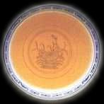
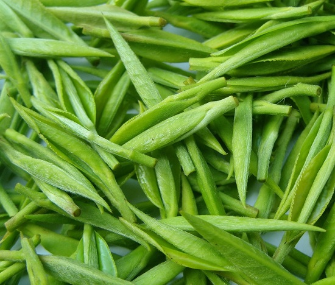

绿茶及其特性
茶类的划分可以有多种方法。有的根据制造方法不同和品质上的差异，将茶叶分为绿茶、红茶、乌龙茶（即青茶） 、白茶、黄茶和黑茶六大类。
有的根据我国出口茶的类别将茶叶分为绿茶、红茶、乌龙茶、白茶、花茶、紧压茶和速溶茶等几大类。
有的根据我国茶叶加工分为初、精制两个阶段的实际情况，将茶叶分为毛茶和成品茶两大部分，其中毛茶分绿茶、红茶、乌龙茶、白茶和黑茶五大类，将黄茶归入绿茶一类；成品茶包括精制加工的绿茶、红茶、乌龙茶、白茶和再加工而成的花茶、紧压茶和速溶茶等类。
有的还从产地划分将茶叶称作川茶、浙茶、闽茶等等，这种分类方法一般仅是俗称。还可以其生长环境来分：平地茶，高山茶，丘陵茶。另外还有一些“茶”其实并不是真正意义上的茶，但是一般的饮用方法上与一般的茶一样，故而人们常常以茶来命名之，例如虫茶、鱼茶。有的这类茶已经没有多少人知道它不是茶了，例如绞股蓝茶。将上述几种常见的分类方法综合起来，中国茶叶则可分为基本茶类和再加工茶类两大部分。

茶色不同来分类——绿茶：
绿茶，又称不发酵茶。以适宜茶树新梢为原料，经杀青、揉捻、干燥等典型工艺过程制成的茶叶。其干茶色泽和冲泡后的茶汤、叶底以绿色为主调，故名。
绿茶的特性，较多的保留了鲜叶内的天然物质。其中茶多酚咖啡碱保留鲜叶的85%以上，叶绿素保留50%左右，维生素损失也较少，从而形成了绿茶“清汤绿叶，滋味收敛性强”的特点。最科学研究结果表明，绿茶中保留的天然物质成分，对防衰老、防癌、抗癌、杀菌、消炎等均有特殊效果，为其他茶类所不及。
中国绿茶中，名品最多，不但香高味长，品质优异，且造型独特，具有较高的艺术欣赏价值，绿茶按其干燥和杀青方法的不同，一般分为炒青、烘青、晒青和蒸青绿茶。
炒青绿茶：由于在干燥过程中受到机械或手工操力的作用不同，成茶形成了长条形、圆珠形、扇平形、针形、螺形等不同的形状，故又分为长炒青、圆炒青、扁炒青等等。长炒青精制后称眉茶，成品的花色有珍眉、贡熙、雨茶、针眉、秀眉等，各具不同的品质特征。如：
珍眉：条索细紧挺直或其形如仕女之秀眉，色泽绿润起霜，香气高鲜，滋味浓爽，汤色、叶底绿微黄明亮；
贡熙：是长炒青中的圆形茶，精制后称贡熙。外形颗粒近似珠茶，圆叶底尚嫩匀；
雨茶：原系由珠茶中分离出来的长形茶，现在雨茶大部分从眉茶中获取，外形条索细短、尚紧，色泽绿匀，香气纯正，滋味尚浓，汤色黄绿，叶底尚嫩匀；
圆炒青：外形颗粒圆紧，因产地和采制方法不同，又分为平炒青、泉岗辉白和涌溪火青等。
平炒青：产于浙江嵊县、新昌、上虞等县。因历史上毛茶集中绍兴平水镇精制和集散，成品茶外形细圆紧结似珍珠，故称“平水珠茶”或称平绿，毛茶则称平炒青；
扁炒青：因产地和制法不同，主要分为龙井、旗枪、大方三种。
龙井：产于杭州市西湖区，又称西湖龙井。鲜叶采摘细嫩，要求芽叶均匀成朵，高级龙井做工特别精细，具有“色绿、香郁。味甘、形美”的品质特征。
旗枪：产于杭州龙井茶区四周及毗邻的余杭、富阳、肖山等县。
大方：产于安徽省歙县和浙江临安、淳安毗邻地区，以歙县老竹大方最为著名。
在炒青绿茶中，因其制茶方法不同，又有称为特种炒青绿茶，为了保持叶形完整，最后工序常进行烘干。其茶品有洞庭碧螺春、南京雨花茶。金奖惠明、高桥银峰、韶山韶峰、安化松针。古丈毛尖、江华毛尖、大庸毛尖、信阳毛尖、桂平西山茶、庐山云雾等等。在此只简述二品，如洞庭碧螺春：产于江苏吴县太湖的洞庭山川碧螺峰的品质最佳。外形条索纤细、匀整，卷曲似螺，白毫显露，色泽银绿隐翠光润；内质清香持久，汤色嫩绿清澈，滋味清鲜回甜；叶底幼嫩柔匀明亮。金奖惠明：产于浙江云和县。曾于1915年巴拿马万国博览会上获金质奖章而得名，外形条索细紧匀整，苗秀有峰毫，色泽绿润；内质香高而持久，有花果香，汤色清澈明亮，滋味甘醇爽口，叶底嫩绿明亮。
烘青绿茶：是用烘笼进行烘干的，烘青毛茶经再加工精制后大部分作熏制花茶的茶坯，香气一般不及炒青高，少数烘青名茶品质特优。以其外形亦可分为条形茶、尖形茶、片形茶、针形茶等。条形烘青，全国主要产茶区都有生产；尖形、片形茶主要产于安徽、浙江等省市。其中特种烘青，主要有黄山毛峰、太平猴魁、六安瓜片、敬亭绿雪、天山绿茶、顾诸紫笋。江山绿牡丹、峨眉毛峰、金水翠峰、峡州碧峰、南糯白毫等。如黄山毛峰：产于安徽软县黄山。外形细嫩稍卷曲，芽肥壮、匀整，有锋毫，形似“雀舌”，色泽金黄油润，俗称象牙色，香气清鲜高长，汤色杏黄清澈明亮，滋味醇厚鲜爽回甘，叶底芽叶成朵，厚实鲜艳。
晒青绿茶：是用日光进行晒于的。主要分布在湖南、湖北。广东。广西、四川，云南、贵州等省有少量生产。晒青绿茶以云南大叶种的品质最好，称为“滇青”；其他如川青、黔青、桂青、鄂青等品质各有千秋，但不及滇青。
蒸青绿茶：以蒸汽杀青是我国古代的杀青方法。唐朝时传至日本，相沿至今；而我国则自明代起即改为锅炒杀青。蒸青是利用蒸汽量来破坏鲜叶中酶活性，形成千茶色泽深绿，茶汤浅绿和茶底青绿的：‘三绿”的品质特征，但香气较闷带青气，涩味也较重，不及锅炒杀青绿茶那样鲜爽。由于对外贸易的需要，我国从80年代中期以来，也生产少量蒸青绿茶。主要品种有恩施玉露，产于湖北恩施；中国煎茶，产于浙江。福建和安徽三省。

绿茶是历史最早的茶类。古代人类采集野生茶树芽叶晒于收藏，可以看作是广义上的绿茶加工的开始，距今至少有三千多年。但真正意义上的绿茶加工，是从公元8世纪发明蒸青制法开始，到12世纪又发明炒青制法，绿茶加工技术已比较成熟，一直沿用至今，并不断完善。
绿茶为我国产量最大的茶类，产区分布于各产茶省、市、自治区。其中以浙江、安徽、江西三省产量最高，质量最优，是我国绿茶生产的主要基地。在国际市场上，我国绿茶占国际贸易量的70％以上。行销区遍及北非、西非各国及法、美、阿富汗等50多个国家和地区。在国际市场上绿茶销量占内销总量的1／3以上。同时，绿茶又是生产花茶的主要原料。
各类绿茶名：西湖龙井；惠明茶；洞庭碧螺春；顾渚紫茶；午子仙毫；黄山毛峰；信阳毛尖；平水珠茶；宝洪茶；上饶白眉；径山茶；峨眉竹叶青；南安石亭绿；仰天雪绿；蒙顶茶；涌溪火青；仙人掌茶；天山绿茶；永川秀芽；休宁松萝；恩施玉露；都匀毛尖；鸠坑毛尖；桂平西山茶；老竹大方；泉岗辉白；眉茶；安吉白片；南京雨花茶；敬亭绿雪；天尊贡芽；滩茶；双龙银针；太平猴魁；源茗茶；峡州碧峰；秦巴雾毫；开化龙须；庐山云雾；安化松针；日铸雪芽；紫阳毛尖；江山绿牡丹；六安瓜片；高桥银峰；云峰与蟠毫；汉水银梭；云南白毫；遵义毛峰；九华毛峰；五盖山米茶；井岗翠绿；韶峰；古劳茶；舒城兰花；州碧云；小布岩茶；华顶云雾；南山白毛芽；天柱剑毫；黄竹白毫；麻姑茶；车云山毛尖；桂林毛尖；建德苞茶；瑞州黄檗茶；双桥毛尖；覃塘毛尖；东湖银毫；江华毛尖；龙舞茶；龟山岩绿；无锡毫茶；桂东玲珑茶；天目青顶；新江羽绒茶；金水翠峰；金坛雀舌；古丈毛尖；双井绿；周打铁茶；文君嫩绿；前峰雪莲；狮口银芽；雁荡毛峰；九龙茶；峨眉毛峰；南山寿眉；湘波绿；晒青；山岩翠绿；蒙顶甘露；瑞草魁；河西圆茶；普陀佛茶；雪峰毛尖；青城雪芽；宝顶绿茶；隆中茶；松阳银猴；龙岩斜背茶；梅龙茶；兰溪毛峰；官庄毛尖；云海白毫；莲心茶；金山翠芽；峨蕊；牛抵茶；化佛茶；贵定云雾茶；天池茗毫；通天岩茶；凌云白茶；蒸青煎茶；云林茶；盘安云峰；绿春玛玉茶；东白春芽；太白顶芽；千岛玉叶；清溪玉芽；攒林茶；仙居碧绿；七境堂绿茶；南岳云雾茶；大关翠华茶；湄江翠片；翠螺；窝坑茶；余姚瀑布茶；苍山雪绿；象棋云雾；花果山云雾茶；水仙茸勾茶；遂昌银猴；墨江云针。